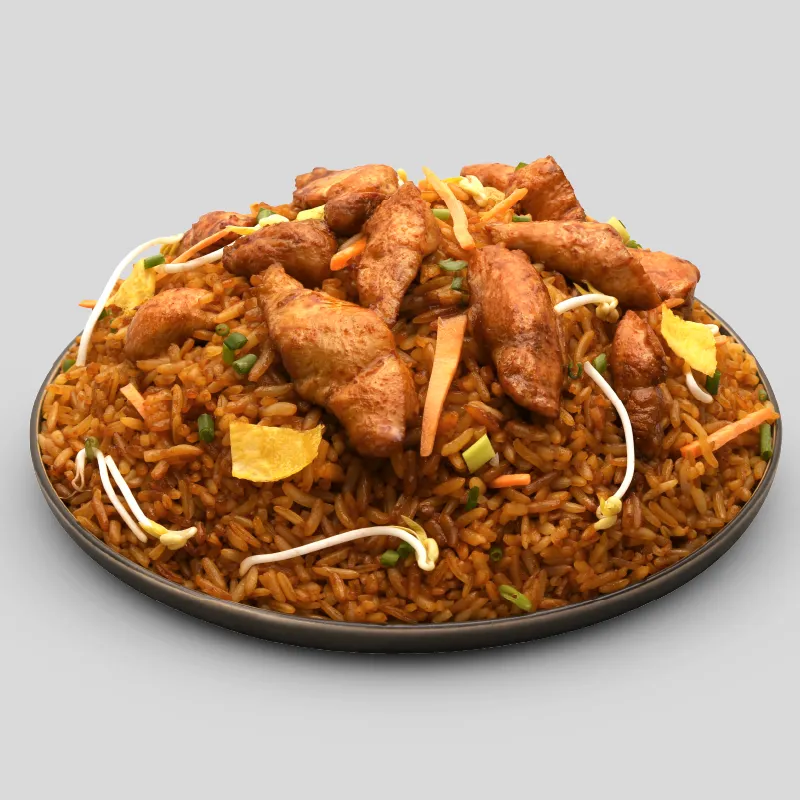
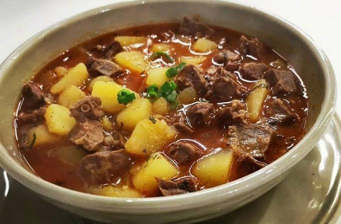
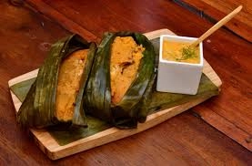
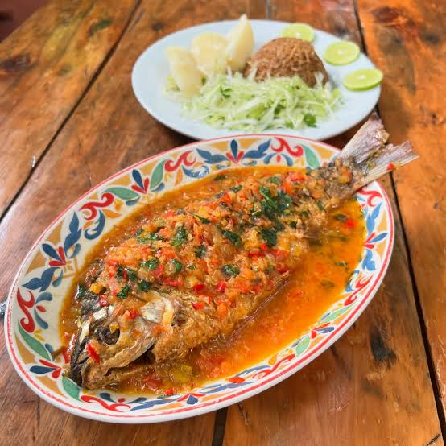
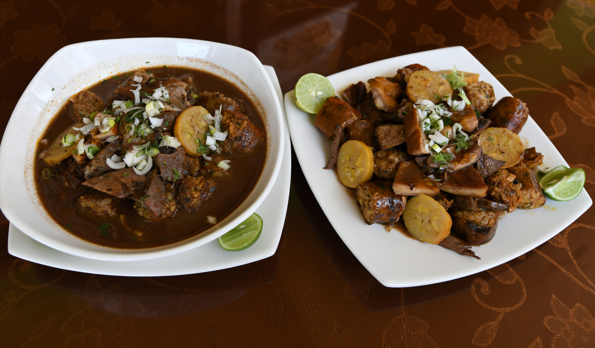

1. Descripción del cantón
Quevedo es uno de los cantones más importantes de la provincia de Los Ríos. Se caracteriza por su actividad comercial, agrícola y ganadera. Está ubicado en la región Costa del Ecuador y es conocido por su desarrollo económico y por el río que atraviesa la ciudad.
Fue creado como cantón el 7 de octubre de 1943.
2. Parroquias
Parroquias urbanas
- 7 de Octubre
- 24 de Mayo
- El Guayacán
- Nicolás Infante Díaz
- San Camilo
- San Cristóbal
- Quevedo
- Venus del Río Quevedo
- Viva Alfaro
Parroquias rurales
- San Carlos
- La Esperanza
3. Gastronomía típica
Quevedo cuenta con una gastronomía variada, caracterizada por los sabores tradicionales de la Costa ecuatoriana.
- El Chaulafan.
- La Chanfaina.
- Bollos de Bocachico y pesacado.
- Estofado de bocachico.
- Caldo de Salchicha.
- Otros clasicos costeros.





4. Lugares turísticos
Ruta del Río
Es un espacio recreativo junto al río Quevedo donde las familias pueden disfrutar de actividades al aire libre.
Río Quevedo
Es uno de los elementos naturales más representativos del cantón y forma parte de su identidad.
Estación Experimental Tropical Pichilingue
Es un centro de investigación agrícola que permite conocer diferentes actividades relacionadas con la producción y el desarrollo del campo.
Fiestas de cantonización
Se celebran cada 7 de octubre con desfiles, eventos culturales y actividades para la ciudadanía.
5. Hoteles
En Quevedo existen diferentes establecimientos de hospedaje.
6. Alcalde del cantón
Alexis Fernando Matute
Alcalde actual: consulta el portal oficial del Gobierno Autónomo Descentralizado Municipal de Quevedo para confirmar el nombre de la autoridad vigente.
Página oficial del Municipio de Quevedo7. Población
Según el Censo de Población y Vivienda de 2022, Quevedo registra aproximadamente 206.008 habitantes.
Es uno de los cantones con mayor concentración poblacional y actividad comercial de la provincia de Los Ríos.
8. Ubicación geográfica
Observa la ubicación del cantón Quevedo en el siguiente mapa: